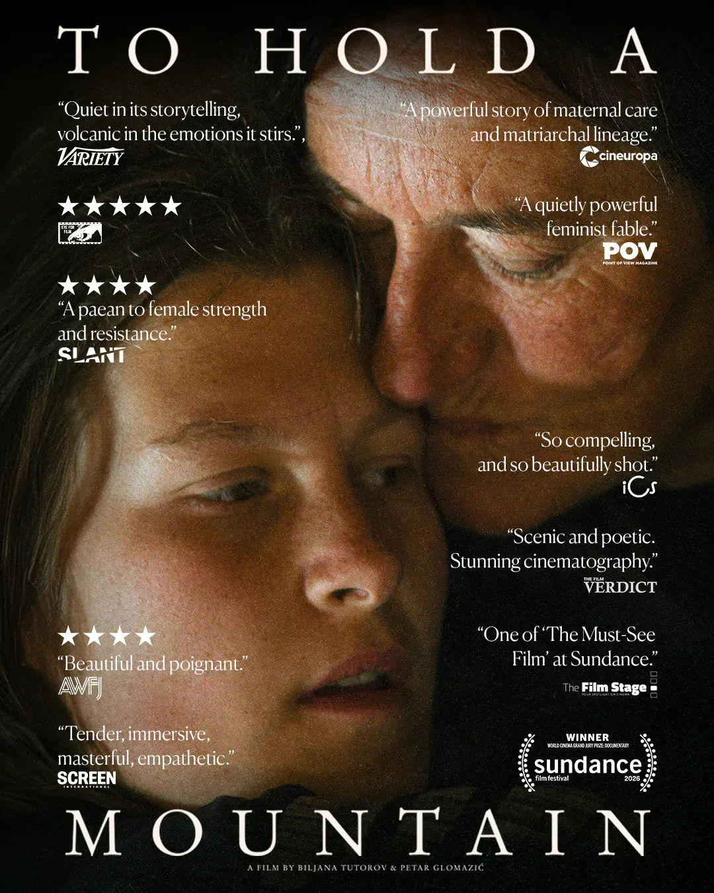

Synopsis
In the remote highlands of Montenegro’s Sinjajevina plateau, Gara and her thirteen-year-old daughter Nada return to their ancestral pastures every summer, where they herd animals, gather herbs and live in symbiosis with the mountain they call “Mother.” But their fragile world comes under threat when the Montenegrin government advances plans for a NATO-backed military training ground in the heart of this protected landscape. Gara emerges as an unexpected leader in the fight to defend Sinjajevina but, as Nada grows into young womanhood, the encroaching violence on the land awakens questions about her past, her future and the cycle of harm within her family she hopes to break.